نظام رقمي لإدارة وتوثيق معايرة أجهزة المسح الإشعاعي Secondary Standard Dosimetry Laboratory (SSDL)
مركز البحوث النووية إدارة الوقاية من الإشعاع قسم قياس وتقدير الجرعات الشخصية والمعايرة
تصميم وتطوير وتنفيذ م. إدريس فتح الله الهري · م. رضا علي المريمي
الإصدار {{VERSION}} · {{DATE}}
المحتويات
{{TOC}}
1. قبل أن تبدأ
يسجّل CAL-QR أجهزة المسح الإشعاعي ومعايراتها، ويصدر شهادة المعايرة وملصق QR، ثم يتيح التحقق من صحة أي شهادة لاحقًا.
ويشرح هذا الدليل استخدام المنظومة، ولا يحل محل إجراءات المعايرة الفنية أو تعليمات المختبر.
عن الصور: جميع الصور مأخوذة من قاعدة بيانات تجريبية. الجهات والأجهزة والأسماء والأرقام الظاهرة فيها خيالية.
وقد يختلف عرض الأعمدة عندك حسب حجم شاشتك.
تسلسل العمل
الجهة المالكة: من يملك الجهاز.
نوع الجهاز: القالب الذي يحدد بيانات المعايرة والفحوصات.
سجل المعايرة: الجهاز ونتيجة معايرته وتواريخها.
الشهادة: تُنشأ من السجل، ويُحجز رقمها عند الحفظ النهائي بصيغة TNRC-SSDL-YYYY-XXXX.
النسخة الموقّعة: تُعد الشهادة صادرة عند إرفاق نسختها الموقّعة والمختومة فعليًا.
ملصق QR: يُطبع ويوضع على الجهاز، ويُتحقق به من الشهادة لاحقًا.
2. التشغيل لأول مرة
عند فتح البرنامج أول مرة على جهاز جديد يظهر معالج من أربع خطوات.
تنبيه عند نقل النظام إلى جهاز آخر: لا تبدأ من معالج الإعداد، بل استعِد نسخة احتياطية (القسم 12).
فالتثبيت النظيف يولّد مفتاح توقيع جديدًا، فتفشل كل الشهادات السابقة في التحقق.
الترحيب: اضغط «التالي».
مسار قاعدة البيانات: اترك المسار المقترح أو اضغط «تصفح» لاختيار غيره، ثم «التالي».
حساب المسؤول: أدخل الاسم الكامل واسم المستخدم وكلمة المرور (8 أحرف على الأقل) وتأكيدها، ثم السؤال السري وإجابته. احفظ الإجابة جيدًا، فهي طريقك لاسترداد كلمة المرور.
الاكتمال: اضغط «بدء الاستخدام» لتنتقل إلى شاشة الدخول.
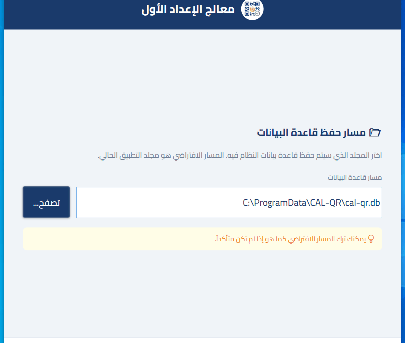
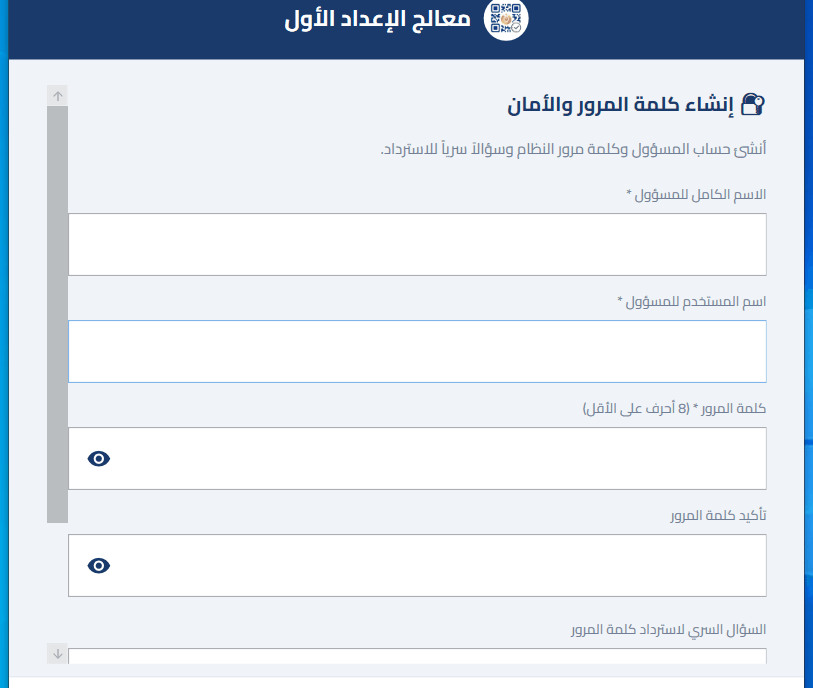
خطوتا مسار قاعدة البيانات وحساب المسؤول في معالج الإعداد.
3. الدخول إلى المنظومة
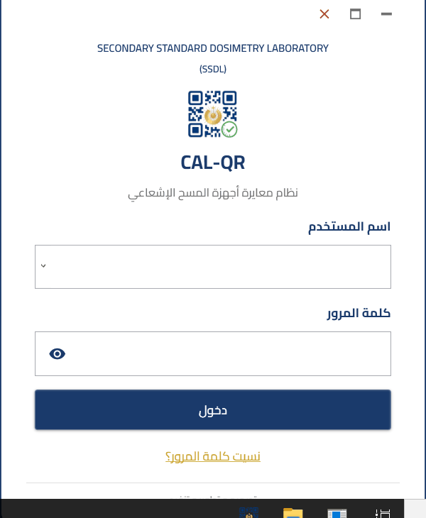
شاشة الدخول.
اكتب اسم المستخدم وكلمة المرور ثم اضغط «دخول». ولكل مستخدم حسابه، فلا تشارك الحسابات لأن سجل العمليات يربط كل إجراء بصاحبه.
القفل بعد المحاولات الخاطئة: بعد 3 محاولات خاطئة يُقفل الدخول 5 دقائق، ويبقى القفل حتى لو أغلقت البرنامج وأعدت فتحه.
القفل عند الخمول: إذا تُرك البرنامج دون استخدام تُقفل الواجهة بعد المدة المضبوطة في الإعدادات، وهي 10 دقائق افتراضيًا.
نسيت كلمة المرور: اضغط الرابط «نسيت كلمة المرور؟»، وأجب عن السؤال السري، ثم عيّن كلمة جديدة. تُحسب محاولات الإجابة الخاطئة، وبعد 5 محاولات يُقفل الاسترداد مؤقتًا. وعند تعذر ذلك راجع مسؤول النظام.
4. لوحة البيانات
هي نقطة البداية اليومية، ولا تتطلب إدخال أي بيانات. وعند الدخول قد تظهر نافذة تنبيه بعدد الأجهزة منتهية الصلاحية والقريبة من الانتهاء.
حد التنبيه: عدد الأيام قبل الانتهاء الذي يُعد الجهاز عنده «قريب الانتهاء» (30 يومًا افتراضيًا)، ويُضبط من الإعدادات.
الجدولان: الأجهزة القريبة من الانتهاء والأجهزة المنتهية فعليًا.
توزيع الأجهزة: عدد الأجهزة لكل جهة مالكة.
البحث السريع الشامل: الحقل أعلى الشاشة، ويُفتح أيضًا بالاختصار Ctrl+F.
5. الجهات المالكة
سجّل كل جهة مرة واحدة باسم موحد، قبل تسجيل أجهزتها، فذلك يجعل التقارير دقيقة ويمنع تكرار الجهة بصيغ مختلفة.
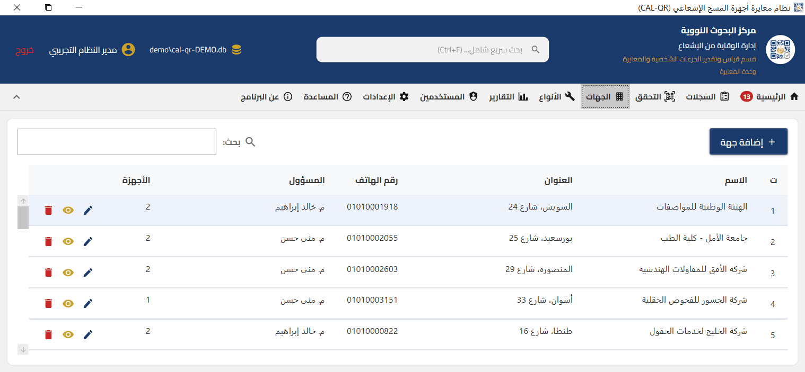
قائمة الجهات المالكة.
اضغط «إضافة جهة».
أدخل اسم الجهة (إجباري)، ثم العنوان ورقم الاتصال واسم المسؤول أو المندوب حسب ما يتوفر.
اضغط «حفظ». وتظهر الجهة بعدها في قائمة الجهات عند إنشاء سجل معايرة.
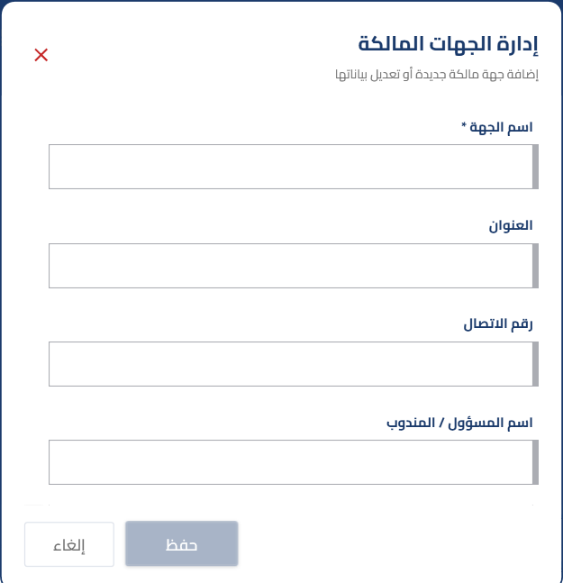
نموذج إضافة جهة مالكة.
6. أنواع الأجهزة وقوالب المعايرة
يحدد النوع محتوى الشهادة: البيانات الأساسية، والفحوصات الوظيفية، ومكونات عدم اليقين. وتعرض القائمة عدد الأجهزة المسجلة لكل نوع.
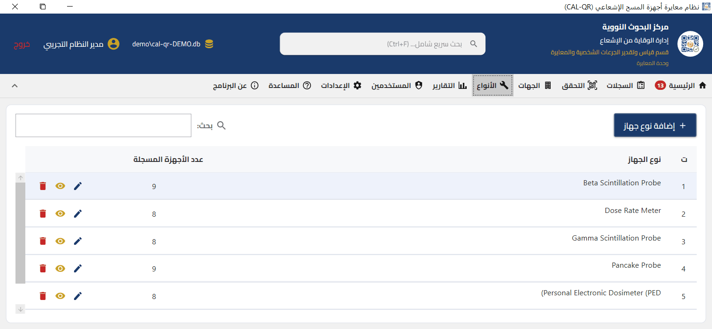
قائمة أنواع الأجهزة.
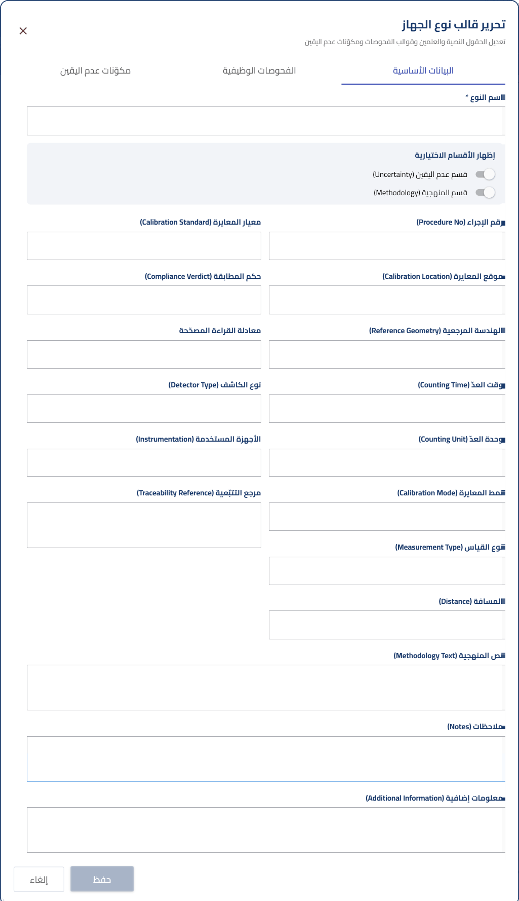
تحرير قالب نوع الجهاز، وفيه ثلاثة تبويبات.
تنبيه: قبل تعديل نوع مستخدم في سجلات سابقة تأكد من أثر التعديل. أما الشهادات الصادرة فهي وثائق مجمّدة ولا تتغير بتعديل القالب.
7. سجلات المعايرة
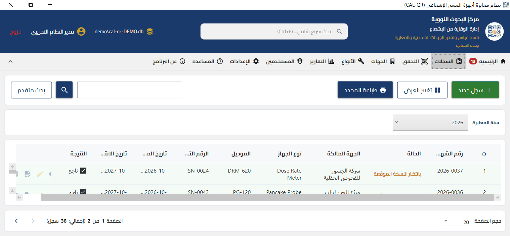
قائمة سجلات المعايرة.
عرض السجلات والبحث عنها
سنة المعايرة: تعرض سجلات السنة المختارة.
البحث: اكتب في الحقل ثم اضغط زر البحث أو Enter.
بحث متقدم: يفتح شروطًا أدق، ثم اضغط «تطبيق الفلترة»، ولإلغائها «مسح الفلاتر».
تغيير العرض: يبدّل بين الجدول والبطاقات.
حجم الصفحة: أسفل الجدول، مع أزرار التنقل بين الصفحات.
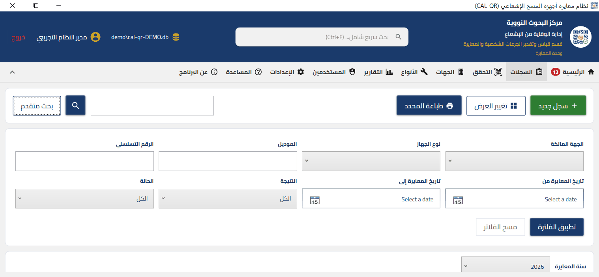
البحث المتقدم.
إنشاء سجل معايرة
اضغط «سجل جديد».
بيانات الجهاز: الجهة المالكة، ونوع الجهاز، والموديل، والرقم التسلسلي. راجع الرقم التسلسلي والجهة قبل الحفظ لتجنب تكرار السجلات.
بيانات المعايرة: تاريخ المعايرة، وتاريخ الانتهاء، والنتيجة (ناجح أو راسب أو مشروط)، والمهندس المعاير، ووصف أو ملاحظات عند الحاجة.
المرفقات: اضغط «إضافة» لإرفاق ملفات بالسجل. أما النسخة الموقّعة من الشهادة فتُرفق من زرها في القائمة، وليس من هنا.
اضغط «حفظ».
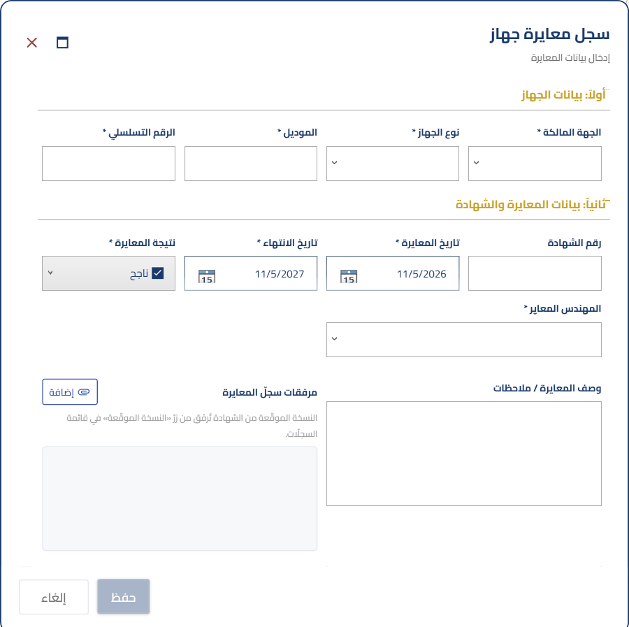
نموذج سجل معايرة جديد.
أزرار كل سجل
التفاصيل
بيانات الجهاز، والمخطط الزمني، وتاريخ معايراته السابقة.
التعديل (القلم)
تعديل بيانات السجل.
الشهادة
إنشاء الشهادة أو فتحها، وحفظها وإصدارها أو إلغاؤها.
النسخة الموقّعة
إرفاق النسخة الموقّعة والمختومة.
الطباعة
معاينة الملصق وطباعته.
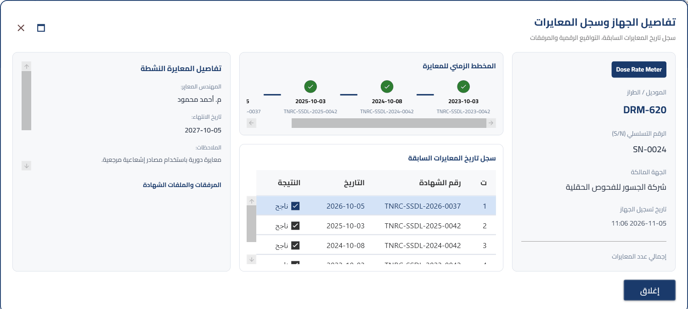
تفاصيل الجهاز وسجل معايراته.
الشهادة والنسخة الموقّعة
افتح الشهادة من زرها، وراجع البيانات، ثم اضغط «حفظ وإصدار الشهادة». وقد يعرض النموذج تنبيهات تستدعي مراجعة البيانات، فاقرأها قبل الحفظ.
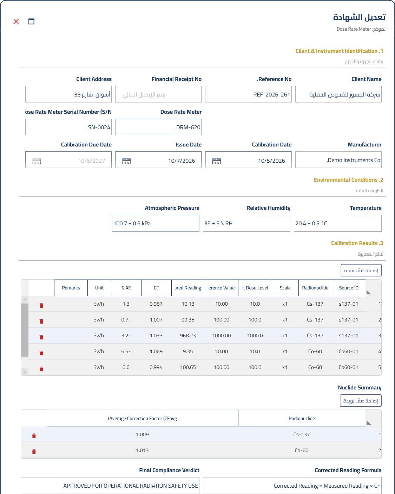
نموذج الشهادة، الجزء الأول.
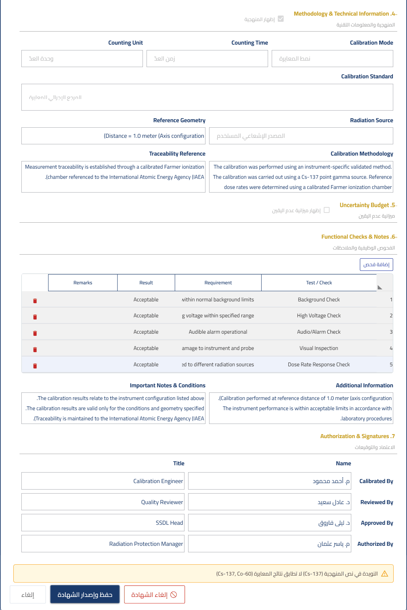
نموذج الشهادة، الجزء الثاني.
بعد توقيع الشهادة وختمها، افتح «النسخة الموقّعة» واضغط «إرفاق نسخة موقّعة». وحتى ذلك الحين تظهر حالة السجل «بانتظار النسخة الموقّعة».
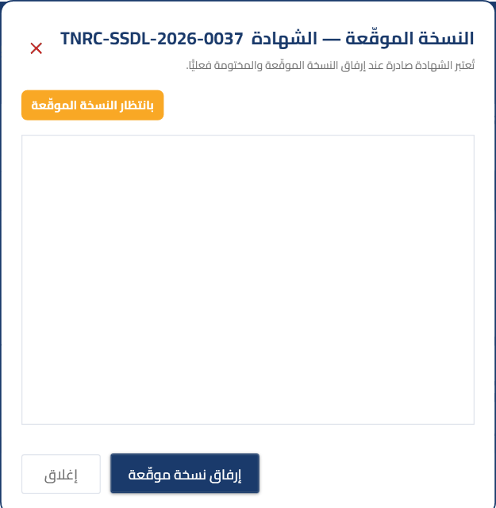
نافذة النسخة الموقّعة.
إلغاء الشهادة نهائي: يتم من زر «إلغاء الشهادة» بعد التأكيد، ويُسجل من ألغاها وتاريخ الإلغاء وسببه، ويظهر ذلك عند التحقق منها.
طباعة ملصق QR
اضغط زر الطباعة في السجل، واختر الطابعة وقالب الملصق، وتحقق من موضعه في المعاينة، ثم اضغط «طباعة الملصق». ولطباعة عدة ملصقات حدد السجلات ثم اضغط «طباعة المحدد».
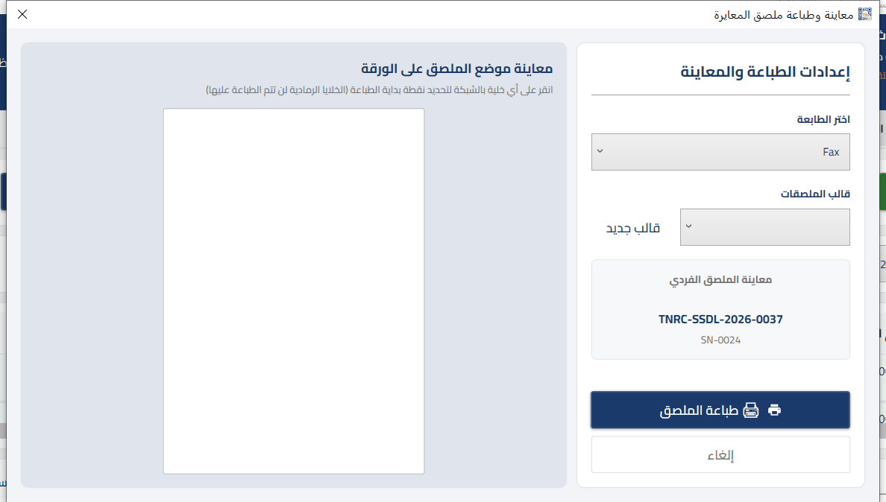
نافذة طباعة الملصق، وقد التُقطت على جهاز تجريبي بلا طابعة.
8. التحقق من الشهادة
يطابق هذا القسم بيانات الشهادة وتوقيعها الإلكتروني، فيكشف الكود غير الموجود والبيانات المعدلة.
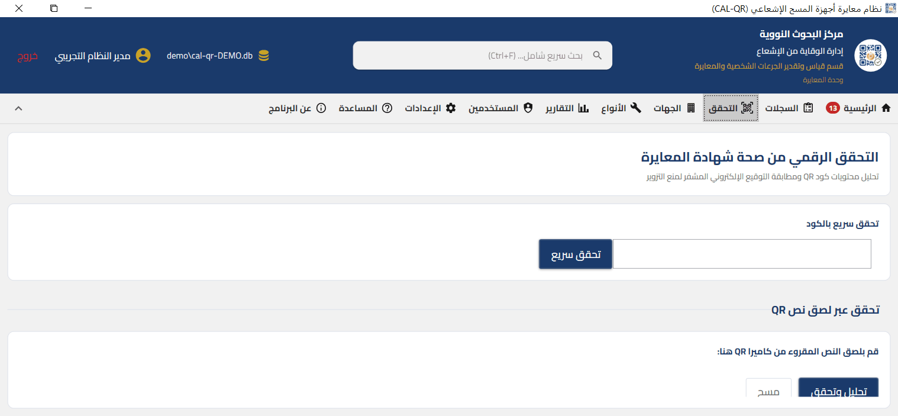
شاشة التحقق الرقمي.
تحقق سريع: اكتب الكود ثم اضغط «تحقق سريع».
لصق نص QR: الصق النص المقروء من كاميرا QR ثم اضغط «تحليل وتحقق».
النتيجة
المعنى
✅ شهادة أصلية ومطابقة
البيانات والتوقيع سليمان. طابق الموديل والرقم التسلسلي مع الجهاز الفعلي.
⚠️ أصلية لكنها عُدّلت
الشهادة أصلية، وعُدّلت بعد إصدارها بالتاريخ المعروض.
🚫 شهادة ملغاة
لا يُعتد بها. وتظهر بيانات الإلغاء وتاريخه.
❌ الكود غير موجود
قد تكون الشهادة مزورة أو الكود غير صحيح، فأعد القراءة أولًا.
ℹ️ تعذر التحقق
إصدار توقيع غير مدعوم، فراجع مسؤول النظام.
وفي الميدان: وجّه كاميرا الهاتف أو تطبيق QR إلى الملصق، واقرأ البيانات الظاهرة، وطابقها مع الجهاز.
9. التقارير
في «تقارير الجهات والأجهزة» صفِّ السجلات، واختر تقريرًا مفصلًا أو مختصرًا، بصيغة PDF أو Excel، ثم اضغط زر التصدير والحفظ. ويعرض «تقرير أداء وحدة المعايرة» إحصائيات فترة تحددها.
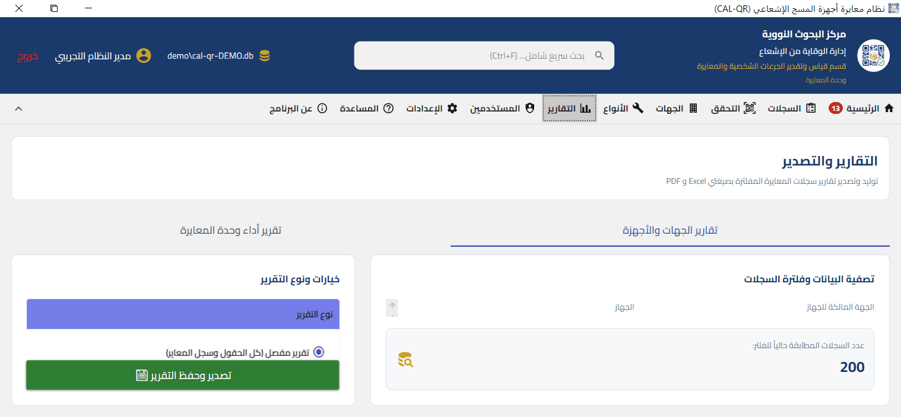
التقارير والتصدير.
PDF: مناسب للطباعة والتقديم الرسمي.
Excel: مناسب للمراجعة والحساب.
10. المستخدمون وسجل العمليات
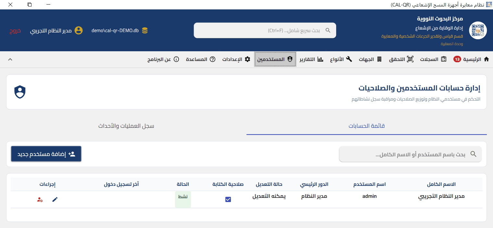
قائمة الحسابات.
اضغط «إضافة مستخدم جديد»، وأدخل الاسم الكامل واسم الدخول وكلمة المرور (8 أحرف على الأقل)، ثم اختر الدور. عند التعديل اترك كلمة المرور فارغة إذا لم ترد تغييرها.
الدور
الاستخدام
مدير النظام
كل الأقسام، ومنها إدارة الحسابات.
مستخدم
حسب الصلاحيات الفرعية المفعلة له.
مشاهد
العرض والتصفح.
ويحدد خيار «صلاحية التعديل والكتابة» والمفاتيح الفرعية الأقسام المتاحة. أعطِ كل حساب ما يحتاجه لعمله فقط.
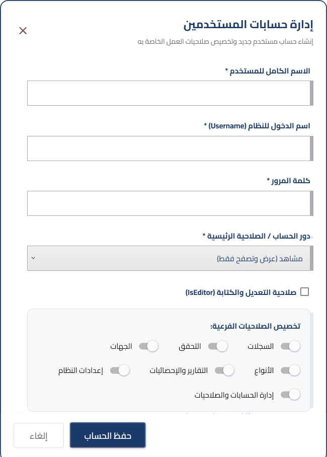
نموذج حساب مستخدم.
سجل العمليات
من تبويب «سجل العمليات والأحداث» في قسم المستخدمين. ويعرض كل عملية ومنفذها وتاريخها، ويمكن تصفيته بنوع العملية والتاريخ.
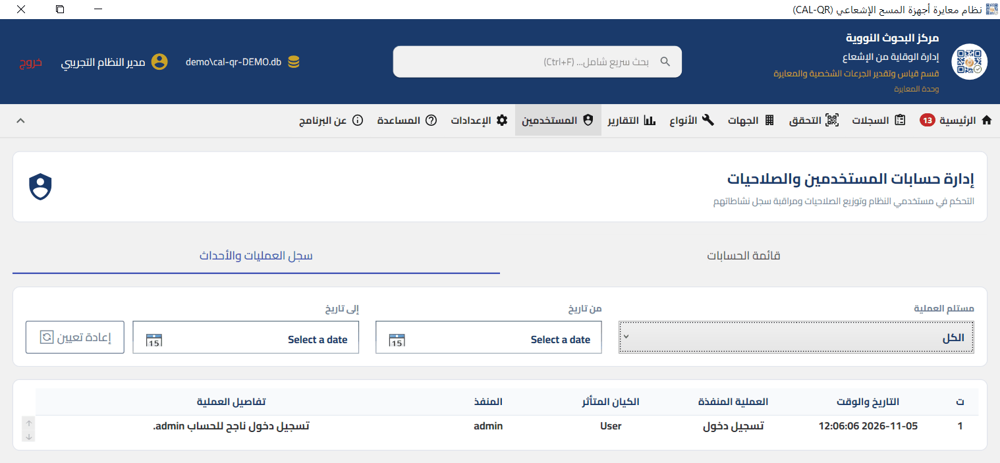
سجل العمليات والأحداث.
11. الإعدادات
الأمان
لتغيير كلمة مرورك، ولضبط كلمة سر قسم «مفتاح التوقيع» في المساعدة.
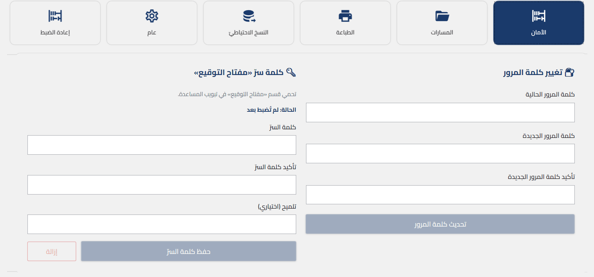
بطاقة الأمان.
مفتاح التوقيع: يوقّع النظام به كل شهادة، وفقدانه يعني تعذر التحقق من الشهادات السابقة نهائيًا. طريقة حفظه مشروحة في قسم «مفتاح التوقيع» المحمي داخل شاشة المساعدة، ولا تُذكر في هذا الدليل عمدًا. نفّذها قبل إصدار أول شهادة حقيقية.
المسارات
أماكن قاعدة البيانات والمرفقات ومخرجات الملصق. غيّرها عند الحاجة فقط، وبعد التأكد من صلاحية الكتابة في المجلد، ثم اضغط «حفظ المسارات».
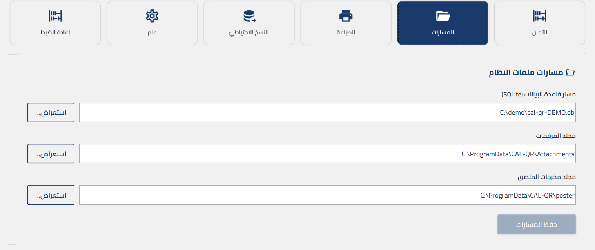
بطاقة المسارات.
الطباعة
اختر القالب الافتراضي، أو أنشئ قالبًا جديدًا تحدد فيه نوع الورق وأبعاده، وعدد الأعمدة والصفوف، وأبعاد الملصق، والهوامش والفراغات بالمليمتر. قِس الملصق فعليًا، وجرّب طباعة واحدة قبل اعتماد القالب.
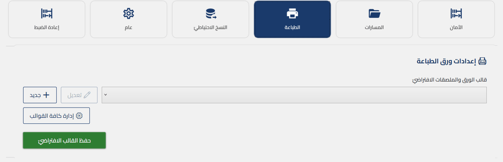
بطاقة الطباعة.
عام
حد التنبيه قبل انتهاء الصلاحية بالأيام، ومدة الإغلاق التلقائي عند الخمول بالدقائق.
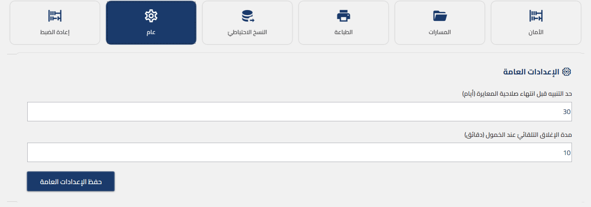
بطاقة الإعدادات العامة.
12. النسخ الاحتياطي والاستعادة
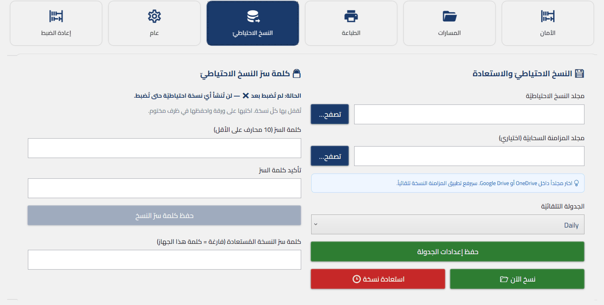
بطاقة النسخ الاحتياطي.
إعداد النسخ وأخذها
كلمة سر النسخ (مرة واحدة، قبل أي نسخة): 10 محارف على الأقل. اكتبها على ورقة واحفظها في ظرف مختوم. دون ضبطها لا تُنشأ أي نسخة، ودونها لا تُفتح النسخة على جهاز آخر.
نسخة يدوية: اضغط «نسخ الآن». ويكون الملف بامتداد .cqbak.
انقل نسخة دوريًا إلى وسيط خارجي، واحفظها في مكان آمن كوثيقة سرية.
جرّب الاستعادة: النسخة التي لم تُختبر لا يُعتمد عليها. جرّب استعادتها مرة على جهاز آخر قبل أن تحتاج إليها.
الاستعادة
على جهاز جديد، أو لنسخة أُخذت قبل تغيير كلمة السر: اكتب كلمة سر النسخة في خانتها. وعلى الجهاز نفسه اتركها فارغة.
اضغط «استعادة نسخة» واختر الملف.
وافق على التحذير، فالبيانات الحالية ستُستبدل بالكامل. ثم يعيد البرنامج تشغيل نفسه.
نسخة أمان تلقائية: قبل أن تستبدل المنظومة بياناتك تحفظ نسخة مقفلة من الوضع الحالي، اسمها يبدأ بـ CalQR_PreRestore_ في مجلد النسخ، ورسالة النجاح تذكر مكانها. إن استعدت نسخة خطأً، أو احتجت شهادات صدرت بعد تاريخ النسخة، فاستعد ملف CalQR_PreRestore_ نفسه فيرجع كل شيء كما كان. إن تعذّر حفظ نسخة الأمان لا تتم الاستعادة ولا يتغير شيء.
تأكيد آخر رقم شهادة: بعد الاستعادة تظهر نافذة تقترح آخر رقم شهادة تعرفه المنظومة. إن كان في السجل الورقي رقم أكبر صدر فعلًا فاكتبه. لا يُقبل رقم أصغر، حتى لا يُعطى رقم شهادة مسلَّمة لشهادة أخرى.
حدود نسخة الأمان: تحمي من الاستعادة الخاطئة، لا من تلف القرص. أبقِ النسخ اليومي مفعّلًا، وانقل النسخ دوريًا إلى وسيط خارجي أو إلى المجلد السحابي.
13. إعادة الضبط
مسح كلي لا يُستخدم لحل مشكلة عادية. يمسح كل بيانات المعايرة والملفات والسجلات. ابدأ دائمًا بأخذ نسخة احتياطية وبفهم سبب المشكلة.
يتطلب فتح البطاقة كلمة مرور حسابك، ثم يتطلب التنفيذ كتابة العبارة RESET-ALL-DATA وكلمة المرور الحالية. وتُؤخذ نسخة احتياطية إجبارية قبل الحذف، لذلك يجب أن تكون كلمة سر النسخ مضبوطة.
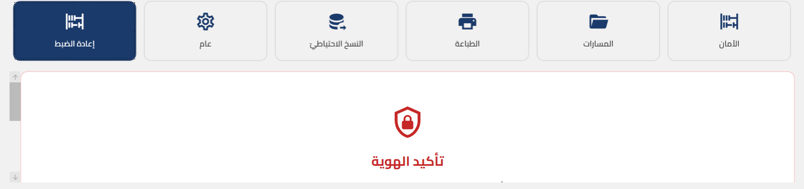
تأكيد الهوية قبل بطاقة إعادة الضبط.
14. دورة العمل اليومية
كل صباح: افتح المنظومة، وراجع لوحة البيانات، وأبلغ المعنيين بالأجهزة القريبة من الانتهاء.
عند ورود جهاز: تأكد من تسجيل الجهة والنوع، ثم أنشئ السجل، ثم الشهادة، ثم أرفق النسخة الموقّعة، ثم اطبع الملصق.
دوريًا: تأكد من وجود نسخ احتياطية حديثة، وانقل واحدة خارج الجهاز.
العناية بالملصق
نظّف سطح الجهاز وجففه قبل اللصق.
اختر مكانًا مستويًا وواضحًا، لا يتعرض للمس المتكرر أثناء القياس.
يفضل وضع شريط لاصق شفاف فوق الملصق لحمايته من مواد التنظيف.
15. حل المشاكل الشائعة
المشكلة
السبب المحتمل
الحل
رفض الدخول
اسم المستخدم أو كلمة المرور غير صحيحة.
تحقق من لغة الكتابة وحالة الأحرف، أو استخدم «نسيت كلمة المرور؟».
الدخول مقفل
3 محاولات خاطئة.
انتظر انتهاء العد التنازلي (5 دقائق). إغلاق البرنامج لا يلغي القفل.
الطابعة لا تطبع
الطابعة غير متصلة أو غير معرّفة في Windows.
شغّلها وتأكد من ظهورها في طابعات Windows، ثم أعد المحاولة.
الملصق منزاح
قياسات القالب لا تطابق الورق.
عدّل الهوامش والأبعاد في القالب وجرّب ملصقًا واحدًا.
لا تُنشأ نسخة احتياطية
كلمة سر النسخ أو المجلد غير مضبوطين.
اضبطهما في بطاقة النسخ الاحتياطي، وراجع سجل العمليات.
خطأ في مسار القاعدة
المجلد محذوف أو محمي من الكتابة.
اختر مسارًا متاحًا وقابلًا للكتابة.
الشهادات القديمة تفشل في التحقق بعد نقل الجهاز
تثبيت نظيف بمفتاح توقيع جديد.
استعِد النسخة الاحتياطية بدل البدء من جديد (القسم 12).
وتجد شرحًا إضافيًا في قسم «المساعدة» داخل البرنامج.